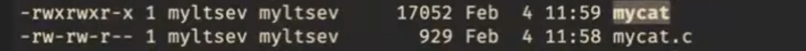
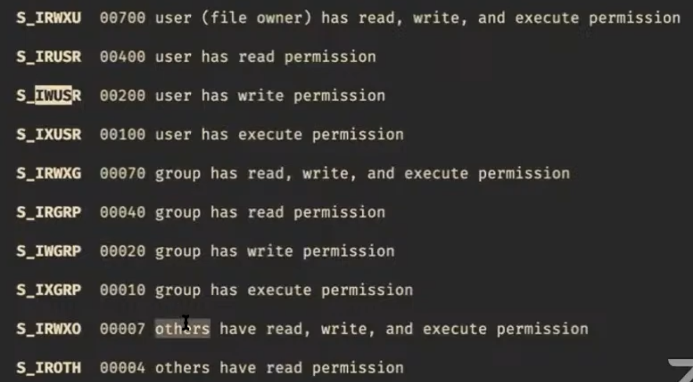
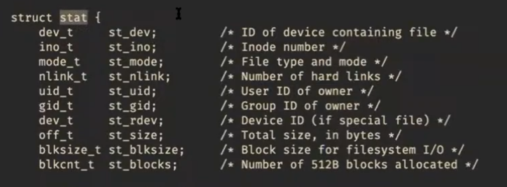
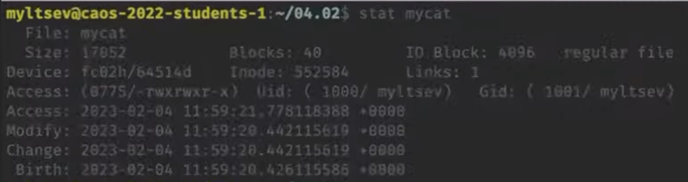

Файловая система
Права доступа
Linux - многопользовательская система, поэтому она организует разделение доступов для пользователей. Если набрать ls -l в терминале, то увидим файлы, а также пользователя, группу и права доступа для каждого файла.
Права доступа записываются в виде трех троек бит. Первая тройка обозначает, что может делать с файлом владелец, вторая тройка - пользователь, входящий в группу, третья тройка - все остальные. Буквы обозначают следующее: r - право читать, w - записывать, x - исполнять как программы.

Режимы доступа можно задавать самим, когда файл создается. Мы делали это в нашей прошлой программе:
int fd = open(name, O_WRONLY | O_CREAT, S_IWUSR | S_IRUSR); // S_IWUSR и S_IRUSR - макросы на восьмеричные числа, которые обозначают биты защиты

Посмотреть всех пользователей можно less /etc/passwd , а группы less /etc/group.
Системный вызов stat
int stat(const char *pathname, struct stat *statbuf); // stat - структура с информацией о файле

Введя в терминал stat filename, можем получить информацию о размере файла, количестве блоков в нем, размере одного блока, времени доступа и др.

Разные сущности файлов
- Обычные файлы - последовательности байт
- Директории, в которых лежат другие файлы и директории
- Символические ссылки
- Жесткие ссылки
- Каналы
- Блочные устройства. Например, диск, куда можно писать блоками
- Символьные устройства. Например, терминал, куда можно читать и писать по одному символу
Символическая ссылка — специальный файл, который содержит путь к другому файлу. Когда программа открывает символическую ссылку, она не показывает содержимое файла, а открывает файл с названием, которое там записано. Если переименуем файл, на который указывает ссылка, то символическая ссылка не будет никуда показывать. ln -s poem.txt poem2.txt создаст символическую ссылку:

Все файлы на диске имеют номера, записанные в Inode. Жесткая ссылка появляется, когда разные имена файлов указывают на один Inode. ln mary.txt poem.txt создаст жесткую ссылку. mary.txt укажет на тот же Inode, что и poem.txt, и любые изменения в одном файле приведут к изменениям в другом. Если удалить один из файлов, то второй файл останется.
На Inode есть reference counter, показывающий, сколько имен ссылаются на это содержимое. Когда reference counter = 0, ОС удаляет файл. Если открыть файл, то его reference counter на это время увеличится.
int stat(const char *file_name, struct stat *buf);
int lstat(const char *pathname, struct stat *statbuf);
int fstat(int fd, struct stat *statbuf); // Для работы с открытым файлом с помощью файлового дескриптора, а не пути
int unlink(const char *pathname); // Удаляет связь с Inode. Если pathname - последнее имя, которое указывало на Inode, то Inode удалится
Утилита stat дает нам информацию о типе файла. Если в stat передать имя символической ссылки, то вместо нее ОС подставит тот файл, на который указывает ссылка. Поэтому, чтобы узнать, является ли файл символической ссылкой, используем вызов lstat, который работает как stat, но передает информацию о самой символьной ссылке, не производя замену.
Директории
Познакомимся с системными вызовами для работы с директориями.
DIR *opendir(const char *name);
DIR *fdopendir(int fd);
struct dirent *readdir(DIR *dirp); // возвращает 0, если дошли до конца директории
В структуре dirent можно посмотреть inode number, имя, тип файла и др.

Напишем программу myls, которая отображает содержимое некоторой директории
#include <dirent.h>
#include <stdio.h>
int main(int argc, char *argv[]) {
const char *dirname = argv[1];
DIR *d = opendir(dirname);
struct dirent *ent;
while ((ent = readdir(d))) {
char buf[4096]; // чтобы записывать длинное имя файла
snprintf(buf, sizeof(buf), "%s/%s", dirname, ent->d_name);
printf("%s\n", buf);
}
}
int link(const char *oldpath, const char *newpath); // делает ссылки
int symlink(const char *target, const char *linkpath); // делает символические ссылки